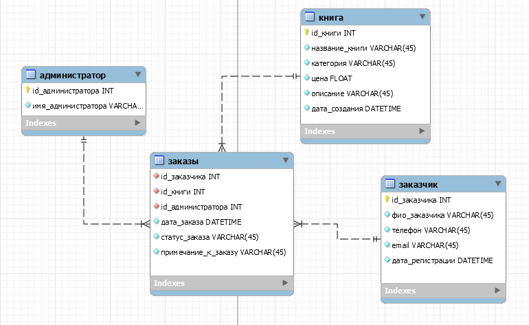
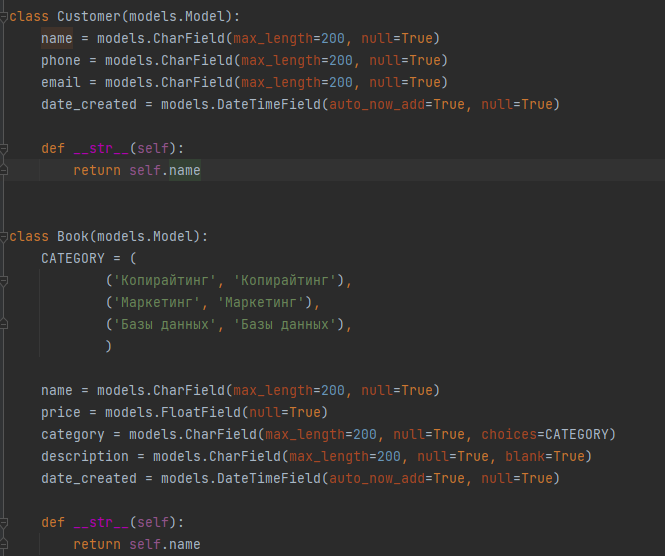
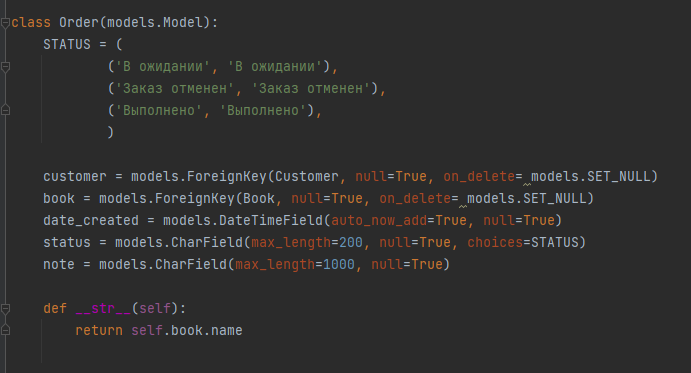

Система обслуживания магазина "Книги"
Магазин "Книги" – магазин, который занимается продажами книг различных тематик. Функционал сайта для пользователя: просмотр списка книг, поиск нужной книги, просмотр всех заказов, в том числе сортировка по определенному заказчику. Администратор же может добавлять заказы и книги, а также редактировать и удалять их. Книги имеют название, категорию, цену, описание, а также дату добавления в базу. Администратор имеет следующие данные о заказчиках: ФИО, телефон email, а также дату регистрации.
Модель базы данных:

Модели django:
 